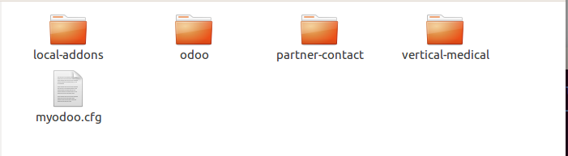

Configurando la Ruta de los Addons en Odoo
La ruta de los addons es un parámetro de configuración, que lista los directorios donde se buscarán los módulos agregados a Odoo cuando se inicializa una nueva base de datos. Los directorios listados en la ruta addons se espera que contengan subdirectorios, cada uno de los cuales es un módulo agregado.
Primero ingresamos a la ruta donde tenemos nuestro entorno de Odoo 10 y creamos una carpeta llamada local-addons:
cd ~/odoo-dev-10/ mkdir local-addons
La carpeta local-addons contendrá los módulos que vamos a desarrollar.
Ahora editamos la configuración de la instancia:
nano myodoo.cfg
Localizamos la linea que empieza con addons_path =. Por defecto esta mostrará lo siguiente:
addons_path = /home/usuario/odoo-dev-10/odoo/odoo/addons,/home/usuario/odoo-dev-10/odoo/addons
Modificamos la linea agregando una coma al final de la linea y añadiendo la ruta donde van a estar nuestros módulos adicionales, en este caso la carpeta local-addons en la ruta /home/usuario/odoo-dev-10:
addons_path = /home/usuario/odoo-dev-10/odoo/odoo/addons,/home/usuario/odoo-dev-10/odoo/addons,/home/usuario/odoo-dev-10/local-addons
Ahora reiniciamos nuestra instancia de odoo:
python odoo/odoo-bin -c myodoo.cfg
Si nos detenemos a observar la terminal y los avisos que nos lanza Odoo, veremos que en la linea de addons_paths ya nos aparece la carpeta local-addons:
2017-01-21 17:03:58,845 8081 INFO ? odoo: addons paths: ['/home/usuario/.local/share/Odoo/addons/10.0', u'/home/usuario/odoo-dev-10/odoo/odoo/addons', u'/home/usuario/odoo-dev-10/odoo/addons', u'/home/usuario/odoo-dev-10/local-addons']
Instalación de módulos desde GitHub
GitHub es una gran fuente de módulos de terceros. Muchos desarrolladores de Odoo utilizan GitHub para compartir sus módulos, y la Asociación Comunitaria Odoo(OCA) mantiene colectivamente varios cientos de addons en GitHub.
Vamos a descargar un módulo de Asociación Comunitaria Odoo(OCA), para buscar los que necesitamos podemos ir a:
En esta caso instalaremos algunos módulos que nos permiten tener funcionalidades para administrar centros de salud, para ello debemos situarnos en la carpeta de nuestro entorno de desarrollo y clonar el módulo allí:
cd ~/odoo-dev-10 git clone https://github.com/OCA/vertical-medical
De acuerdo a la documentación sabemos que estos módulos dependen de otro llamado partner contacto, por lo que también debemos descargarlo para que esté disponible:
git clone https://github.com/OCA/partner-contact.git
Ahora en nuestra carpeta tendremos dos carpetas adicionales tal como se muestra en la imagen:
Todos los repositorios de códigos de la Asociación Comunitaria Odoo(OCA) tienen sus complementos contenidos en subdirectorios separados, lo cual es coherente con lo que espera de Odoo con respecto a los directorios en la ruta addons, por lo que debemos agregar ambas a la ruta de addons:
nano myodoo.cfg
Modificamos la linea addons_path:
addons_path = /home/usuario/odoo-dev-10/odoo/odoo/addons,/home/usuario/odoo-dev-10/odoo/addons,/home/usuario/odoo-dev-10/local-addons, /home/usuario/odoo-dev-10/partner-contact, /home/usuario/odoo-dev-10/vertical-medical
Regresamos a la carpeta anterior y lanzamos nuestra instancia:
cd .. python odoo/odoo-bin -c myodoo.cfg
Ahora nos vamos al navegador para instalar nuestros addons descargados:
Recordemos que el usuario y la contraseña por defecto son admin y admin.
Una vez que hayamos ingresado, buscamos el menú Settings(acá lo tenemos como Configuración, debido a que ya cargamos el soporte para idioma Español) y activamos el modo desarrollador:

Ahora nos vamos al menú Apps y le damos click a la opción "Actualizar lista de aplicaciones":

Nos desplegará una ventana como la siguiente, donde presionamos el botón actualizar:
Finalmente vamos a las aplicaciones y buscamos el módulo Odoo Medical:

Le damos click al botón instalar y automáticamente instalará también el addon partner-contact:
Ya con esto podemos administrar un centro médico con Odoo.

Saludos.
Comentarios
Comments powered by Disqus